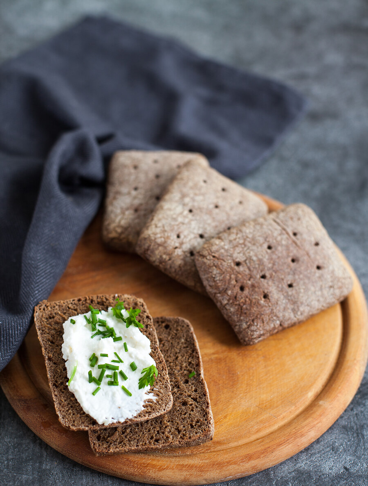

Эти ржаные краюшки, как и ржаной хлеб, я чаще всего пеку на закваске, но бывает, что закваску освежить забыла, а ржаных хлебцев ну очень хочется, тогда пользуюсь дрожжевой версией. Они получаются тягучие и плотные, и если вы не любитель горбушек, вам стоит посмотреть в сторону ржаного хлеба. Но если вы, как и я, считаете, что горбушка — самая ароматная и вкусная часть, этот рецепт для вас.
Краюшки можно печь на закваске, тогда вместо дрожжей возьмите 120 г освеженной закваски, а общий объем муки и воды уменьшите соответственно на 60 г каждого ингредиента.
Часть ржаной муки можно заменить пшеничной и сделать краюшки ржано-пшеничными. Если планируется ручной замес теста, рекомендую для начала ограничиться половиной порции, так как большой объем вымесить будет сложнее (инструкции по вымешиванию ржаного теста см. в теории).